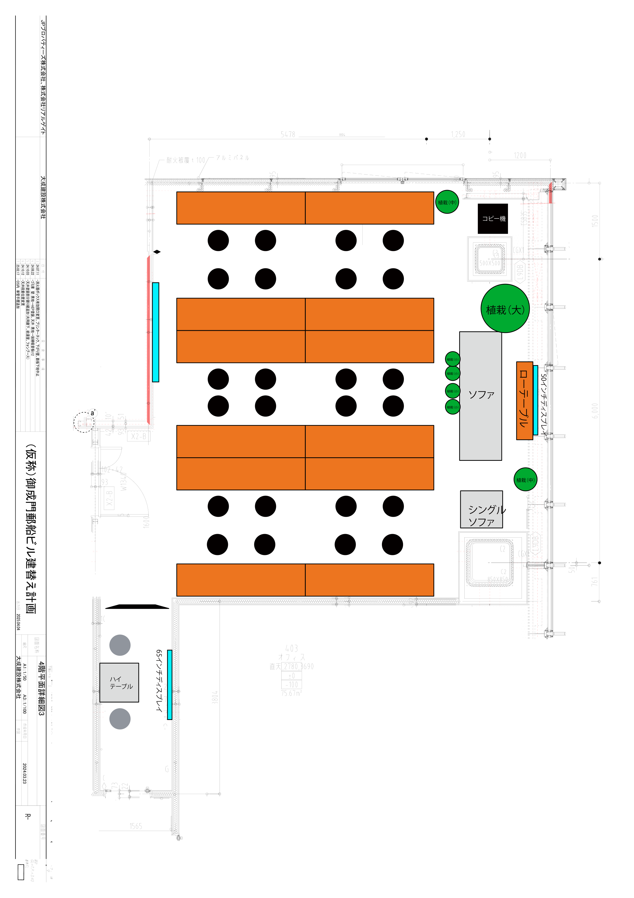

ANYZ 403号室 座席プロット（デスク配置2）
全24席 / 配置15名 / 空席9
天板12枚（IKEA PINNARP 2590×650mm）
デスクグループ: A（上段）B（中上）C（中下）D（下段）

A-1
A-2
B-1
B-2
B-3
B-4
C-1
C-2
C-3
C-4
D-1
D-2
Grp A: 空席
Grp B: 岸田A+小平U
Grp C: 淺見U+有我+他
Grp D: Div.直下+CTO
A1
A2
A3
A4
岸田Lead Cons.
岸Director
峯岸AE
猪龍Director
小平Consultant
吉田AE
望月Director
B8
淺見AE
齋藤Director
有我AE
西山Consultant
三宅Lead Analyst
C6
C7
真保Director
D1
D2
黒宮Manager
石井CTO
天板・座席マッピング
| グループ | 天板 | 座席 | メンバー | チーム |
| A（上段） |
A-1 | A1, A2 |
— / — | 空席 |
| A-2 | A3, A4 |
— / — | 空席 |
| B（中上） |
B-1 | B1, B2 |
岸田 / 岸 |
岸田A |
| B-2 | B3, B4 |
峯岸 / 猪龍 |
岸田A |
| B-3 | B5, B6 |
小平 / 吉田 |
小平U |
| B-4 | B7, B8 |
望月 / — |
小平U / 空席 |
| C（中下） |
C-1 | C1, C2 |
淺見 / 齋藤 |
淺見U |
| C-2 | C3, C4 |
有我 / 西山 |
有我 |
| C-3 | C5, C6 |
三宅 / — |
三宅 / 空席 |
| C-4 | C7, C8 |
— / 真保 |
空席 / 淺見U |
| D（下段） |
D-1 | D1, D2 |
— / — | 空席 |
| D-2 | D3, D4 |
黒宮 / 石井 |
Div.直下 / CTO |